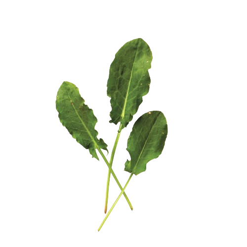
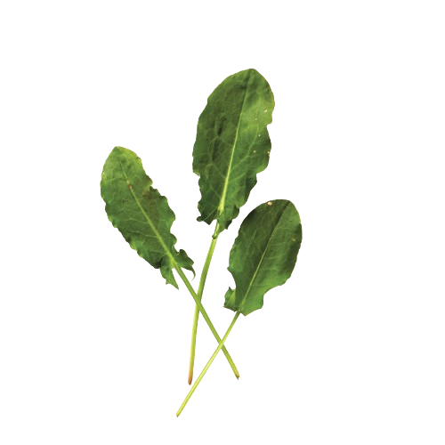
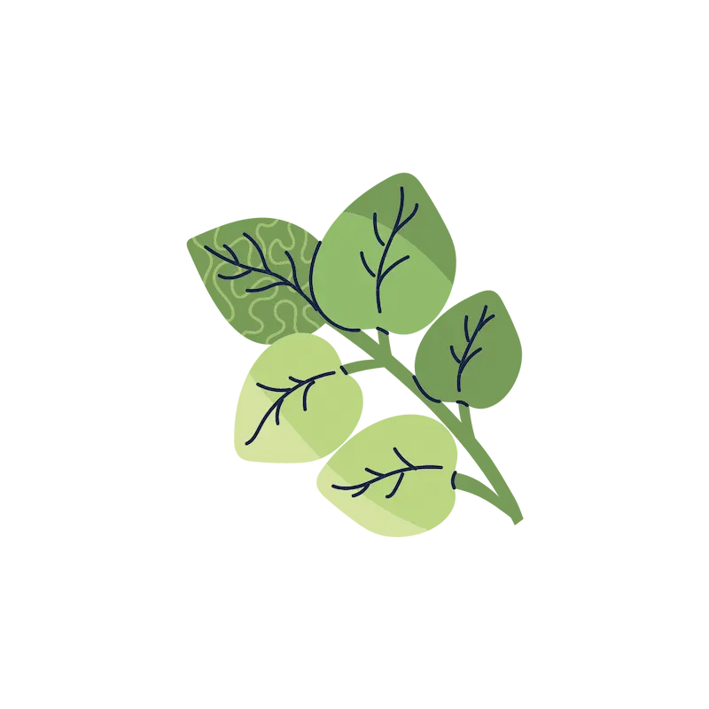
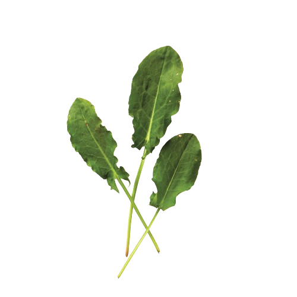

Urt
Watercress is a sharp-tasting herb that grows abundantly alongside streams and creeks. It has been used in cooking for centuries; watercress soup, for example, is a classic in many cuisines.


Watercress is a sharp-tasting herb that grows abundantly alongside streams and creeks. It has been used in cooking for centuries; watercress soup, for example, is a classic in many cuisines.